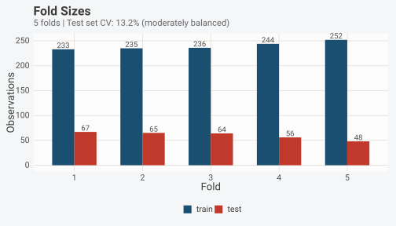
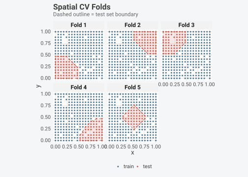
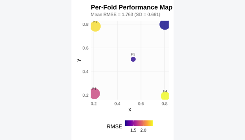
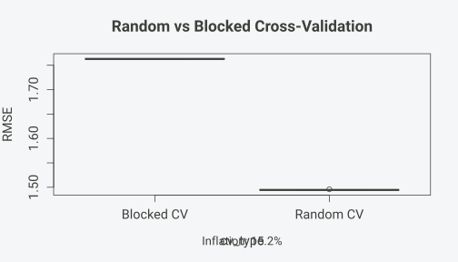
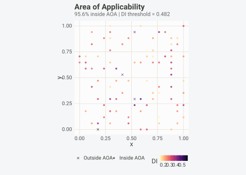
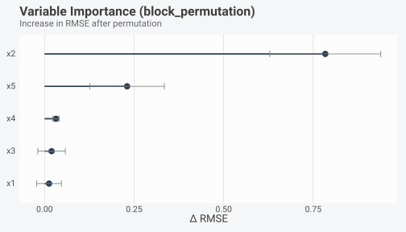
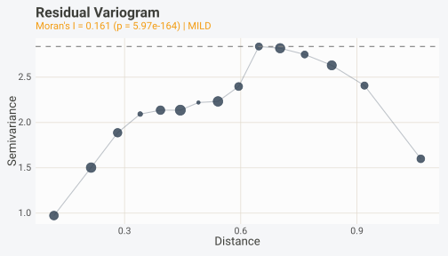
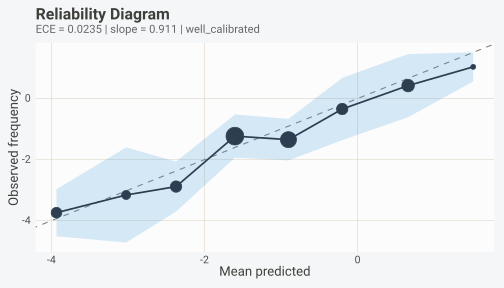
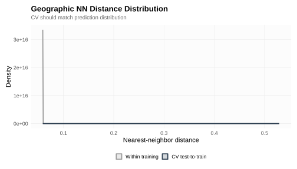

Installation
install.packages("pak") # development version
pak::pak("gcol33/BORG")Why your test accuracy might be wrong
A model shows 95% accuracy on test data, then drops to 60% in production. The culprit, almost always, is data leakage: information from the test set that contaminated training. Leakage takes many forms: preprocessing fitted on all data before splitting, features derived from the outcome, the same patient appearing in train and test, or random cross-validation applied to spatially autocorrelated observations. These mistakes are easy to make and hard to spot manually.
BORG (Bounded Outcome Risk Guard) detects these problems before you compute metrics. It examines your data, your splits, your preprocessing objects, and your fitted model to flag violations that would inflate performance estimates. The package covers the full evaluation pipeline: data dependency detection (spatial autocorrelation via Moran’s I, temporal autocorrelation via the Ljung-Box test, clustered structure via the ICC), cross-validation fold generation (10+ blocking strategies), leakage validation (index overlap, target leakage, preprocessing leakage, group leakage, temporal ordering violations), and post-hoc diagnostics (residual spatial structure, calibration, null testing, area of applicability).
When dependencies exist in the data, BORG generates cross-validation folds that respect those dependencies, so your reported error actually predicts how the model will perform on genuinely new data.
This vignette walks through the core workflow:
- Simulate data with known dependencies so we can verify BORG’s detection.
- Diagnose the dependency structure (spatial, temporal, grouped, or mixed).
- Generate CV folds that respect the detected dependencies.
- Validate existing train/test splits for leakage.
- Fit a model inside a guarded pipeline that checks every fold.
- Compare random vs blocked CV empirically to quantify the inflation.
- Check power to confirm the dataset is large enough for blocked CV.
After the core workflow, short taste tests demonstrate additional features: area of applicability, block-permutation importance, residual diagnostics, calibration, null testing, and interactive maps. Each taste test links to a dedicated vignette with the full treatment.
Simulating data with known dependencies
Before working with real data, it helps to run BORG on synthetic data
where the ground truth is known. borg_simulate() generates
datasets with controlled dependency structures, so you can verify that
BORG’s detection and blocking are doing the right thing.
sim <- borg_simulate(
n = 300,
type = "spatial",
n_predictors = 5,
signal_strength = 0.3,
autocorrelation = 0.5,
seed = 42
)The returned object contains a data frame with spatial coordinates
(x, y), five predictors, and a response
variable. The true_r2 field records the theoretical upper
bound for an honest evaluation. Any model reporting R-squared above this
value is overfitting or benefiting from leakage.
names(sim$data)
#> [1] "x" "y" "x1" "x2" "x3" "x4" "x5" "y.1"
cat("True R-squared:", sim$true_r2, "\n")
#> True R-squared: 0.3
cat("Coordinate columns:", sim$coords, "\n")
#> Coordinate columns: x yThe spatial simulation places coordinates in x and
y, predictors in x1 through x5,
and the response in y.1 (renamed by R to avoid collision
with the y coordinate). Temporal simulations use
time for the time column and y for the
response.
Six simulation types are available, covering the main ways evaluation can go wrong:
| Type | What it generates | Use case |
|---|---|---|
"spatial" |
Gaussian spatial autocorrelation via a Matern-like covariance | Testing spatial blocking |
"temporal" |
AR(1) time series with configurable lag-1 autocorrelation | Testing temporal blocking |
"target_leak" |
Noisy copy of the response added as a feature | Testing leakage detection |
"preprocessing_leak" |
Data pre-normalized on all rows before splitting | Testing preprocessing checks |
"combined" |
Spatial autocorrelation + target leakage together | Worst-case scenario |
"independent" |
IID observations, no dependencies | Control / sanity check |
The signal_strength parameter (0 to 1) controls how much
variance in the response is explained by the predictors. At 0.3, the
true R-squared is around 0.3; any model reporting substantially higher
values is exploiting autocorrelation or leakage. The
autocorrelation parameter (0 to 1) controls the strength of
spatial or temporal dependence.
sim_leak <- borg_simulate(n = 200, type = "target_leak", seed = 1)
cat("Leaked variables:", sim_leak$leaked_vars, "\n")
#> Leaked variables: leaked_featureThe leaky dataset contains a variable that correlates almost perfectly with the response. A model using this variable would appear to have near-perfect predictive power, but the feature would not be available at prediction time on genuinely new data.
Diagnosing data dependencies
The entry point for most workflows is borg(). When
called without train/test indices, it diagnoses the data and generates
CV folds in one step.
result <- borg(
sim$data,
coords = c("x", "y"),
target = "y.1",
v = 5
)
result
#> BORG Result
#> ===========
#>
#> Dependency: SPATIAL (moderate severity)
#> Strategy: spatial_block
#> Folds: 5
#>
#> Fold sizes: train 233-252, test 48-67
#>
#> Access components:
#> $diagnosis - BorgDiagnosis object
#> $folds - List of train/test index vectors
#> $cv - Full borg_cv objectThe diagnosis reports what kind of dependency was detected (spatial,
temporal, clustered, or mixed), how severe it is, and which CV strategy
BORG recommends. The result$diagnosis slot holds the full
BorgDiagnosis object with quantitative details.
diag <- result$diagnosis
cat("Dependency type:", diag@dependency_type, "\n")
#> Dependency type: spatial
cat("Severity:", diag@severity, "\n")
#> Severity: moderate
cat("Recommended CV:", diag@recommended_cv, "\n")
#> Recommended CV: spatial_block
cat("Moran's I:", round(diag@spatial$morans_i, 3),
"(p =", formatC(diag@spatial$morans_p, format = "e", digits = 2), ")\n")
#> Moran's I: 0.209 (p = 0.00e+00 )
cat("Effective N:", diag@spatial$effective_n, "out of", diag@n_obs, "\n")
#> Effective N: 274.9999 out of 300Moran’s I quantifies spatial autocorrelation: values near zero indicate no spatial pattern, values near 1 indicate strong positive autocorrelation. The effective sample size is the number of independent observations after accounting for spatial dependence. A dataset of 300 points with effective N of 80 means random CV would treat 300 observations as independent when only 80 carry unique information; error estimates from random CV would be far too optimistic.
The inflation estimate in the diagnosis predicts how much random CV
would overstate model performance. For example, an
auc_inflation of 0.05 means random CV would report AUC
roughly 5 points higher than what the model achieves on truly
independent data. BORG derives this estimate from the autocorrelation
range and the effective sample size, following the framework of Roberts
et al. (2017).
You can also call borg_diagnose() directly if you only
need the diagnosis without generating folds.
diag_only <- borg_diagnose(
sim$data,
coords = c("x", "y"),
target = "y.1"
)
cat("Same result:", diag_only@dependency_type, "\n")
#> Same result: spatialTemporal and grouped data
The same interface handles temporal and grouped data. BORG
auto-detects common column names (date, time,
site, patient_id, etc.), but you can always
specify them explicitly.
sim_temporal <- borg_simulate(n = 300, type = "temporal", seed = 7)
result_temporal <- borg(
sim_temporal$data,
time = "time",
target = "y",
v = 5
)
cat("Recommended CV:", result_temporal$diagnosis@recommended_cv, "\n")
#> Recommended CV: temporal_blockFor temporal data, BORG runs a Ljung-Box test to detect autocorrelation and estimates the decorrelation lag (the number of time steps after which observations become approximately independent). The recommended CV strategy ensures no future data leaks into past folds, either through temporal blocking or a purged CV scheme with an appropriate embargo period.
grouped_data <- data.frame(
site = rep(1:30, each = 10),
x1 = rnorm(300),
measurement = rnorm(300)
)
result_grouped <- borg(grouped_data, groups = "site", target = "measurement", v = 5)
cat("Recommended CV:", result_grouped$diagnosis@recommended_cv, "\n")
#> Recommended CV: randomFor grouped data, BORG computes the intraclass correlation coefficient (ICC), which measures how much variance is explained by group membership. An ICC of 0.5 means half the variance in the response comes from between-group differences. With high ICC, random CV creates optimistic estimates because the same group’s observations appear in both train and test. BORG switches to leave-group-out folds automatically.
When multiple dependency types coexist (spatial coordinates plus a group column), BORG detects the combined structure and recommends a strategy that respects all of them. For instance, spatial-temporal data gets a spatial-temporal blocking strategy that separates folds in both space and time.
Working with CV folds
The generated folds live in result$folds. Each fold is a
list with train and test index vectors.
length(result$folds)
#> [1] 5
fold1 <- result$folds[[1]]
cat("Fold 1 - Train:", length(fold1$train),
" Test:", length(fold1$test), "\n")
#> Fold 1 - Train: 233 Test: 67The borg_cv object in result$cv carries
metadata about the strategy and can be visualized with
autoplot().
autoplot(result$cv, type = "sizes")
For spatial data, pass the original data and coordinate names to see the folds on a map.
autoplot(result$cv, type = "spatial", data = sim$data, coords = c("x", "y"))
Each colour represents a different fold. Spatially blocked folds group nearby points together, so every fold’s test set is geographically separated from its training set. Compare this to random CV, where train and test points are scattered across the entire study area; in that case, a test point might be surrounded by training points only metres away, and the model can exploit local patterns instead of learning the signal.
The strategy BORG chooses depends on the diagnosis. For spatial data,
the default is k-means spatial blocking. Other strategies are available
through borg_cv() directly:
| Strategy | When to use it |
|---|---|
"spatial_block" |
Default for spatial data. K-means clustering on coordinates. |
"environmental_block" |
When environmental gradients matter more than geography. Clusters on predictor values. |
"spatial_plus" |
Two-stage: spatial blocks refined by environmental similarity. |
"knndm" |
When prediction locations are known. Matches CV distance distribution to prediction distances. |
"leave_location_out" |
True spatial LOO with optional buffer zone. Expensive but unbiased. |
"temporal_block" |
Contiguous time blocks. |
"temporal_expanding" |
Expanding window: training set grows, test set slides forward. |
"temporal_sliding" |
Fixed-width sliding window. |
"purged_cv" |
Temporal CV with an embargo period between train and test. |
"group_fold" |
Leave-group-out. |
Exporting folds to other frameworks
By default, borg_cv() returns a list of index vectors.
Set the output argument to convert folds into the format
your framework expects.
cv_rsample <- borg_cv(
sim$data,
diagnosis = result$diagnosis,
coords = c("x", "y"),
v = 5,
output = "rsample"
)
class(cv_rsample)
#> [1] "borg_rset" "manual_rset" "rset" "tbl_df" "tbl"
#> [6] "data.frame"Supported formats: "rsample" (tidymodels),
"caret" (trainControl), "mlr3" (Resampling
object). The conversion preserves the fold structure exactly; no
resampling or re-blocking occurs. You get the same train/test splits
regardless of output format. This makes it straightforward to integrate
BORG’s blocked folds into an existing modelling pipeline without
changing the downstream code. See vignette("frameworks")
for framework-specific examples with caret’s train(),
tidymodels’ tune_grid(), and mlr3’s
resample().
Validating existing splits
When you already have train/test indices, pass them to
borg() and it switches to validation mode. Instead of
generating folds, it checks the split for leakage.
set.seed(1)
train_idx <- sample(300, 210)
test_idx <- setdiff(1:300, train_idx)
risk <- borg(sim$data, train_idx = train_idx, test_idx = test_idx)
risk
#> BorgRisk Assessment
#> ===================
#>
#> Status: VALID (no hard violations)
#> Hard violations: 0
#> Soft inflations: 1
#> Train indices: 210 rows
#> Test indices: 90 rows
#> Inspected at: 2026-10-10 15:35:33
#>
#> --- SOFT INFLATIONS (warnings) ---
#>
#> [1] spatial_overlap
#> 90% of test points fall within the training region convex hull. Consider spatial blocking.
#> Source: data.frame
#> Fix: Review evaluation workflow for potential information reuseNo violations. The split is clean. The BorgRisk object
reports is_valid = TRUE, meaning no hard violations were
found. Now introduce some problems, one at a time, to see how BORG
responds.
Overlapping indices
The most basic mistake: some row indices appear in both the training and test set. This means the model is tested on data it already saw during training.
bad_risk <- borg(sim$data, train_idx = 1:200, test_idx = 150:300)
#> Error in `validate_existing_split()`:
#> ! BORG HARD VIOLATION: train_idx and test_idx overlap (51 shared indices: 150, 151, 152, 153, 154...)borg() refuses to continue when it finds overlapping
indices. It throws an error with the number of shared indices and the
first few values. This fail-fast behaviour prevents you from
accidentally computing metrics on a contaminated split.
For a non-stopping approach that returns a BorgRisk
object instead of throwing, use borg_inspect():
bad_risk <- borg_inspect(sim$data, train_idx = 1:200, test_idx = 150:300)
bad_risk
#> BorgRisk Assessment
#> ===================
#>
#> Status: INVALID (1 hard violation) — Resistance is futile
#> Hard violations: 1
#> Soft inflations: 0
#> Train indices: 200 rows
#> Test indices: 151 rows
#> Inspected at: 2026-10-10 15:35:33
#>
#> --- HARD VIOLATIONS (must fix) ---
#>
#> [1] index_overlap
#> Train and test indices overlap (51 shared indices). This invalidates evaluation.
#> Source: train_idx/test_idx
#> Affected: 51 indices (first 5: 150, 151, 152, 153, 154)
#> Fix: Recreate train/test split with non-overlapping indicesThe BorgRisk object reports
is_valid = FALSE and lists the overlap as a hard violation.
Metrics computed from this split are meaningless.
Target leakage
Target leakage occurs when a feature is derived from (or highly
correlated with) the response variable. The classic example: including
days_since_diagnosis as a predictor when the outcome is
has_disease. The feature is only available after the
outcome is known and would not exist at prediction time.
risk_leak <- borg(
sim_leak$data,
train_idx = 1:140,
test_idx = 141:200,
target = "y"
)
risk_leak
#> BorgRisk Assessment
#> ===================
#>
#> Status: INVALID (1 hard violation) — Resistance is futile
#> Hard violations: 1
#> Soft inflations: 0
#> Train indices: 140 rows
#> Test indices: 60 rows
#> Inspected at: 2026-10-10 15:35:33
#>
#> --- HARD VIOLATIONS (must fix) ---
#>
#> [1] target_leakage_direct
#> Feature 'leaked_feature' has correlation 0.993 with target 'y'. Likely derived from outcome.
#> Source: data.frame$leaked_feature
#> Fix: Remove features derived from the target variableThe leaky feature (leaked_feature) was flagged because
its correlation with the response exceeds 0.99. Removing it before
modelling would fix the problem. BORG also flags “proxy leakage”
(correlation between 0.95 and 0.99) as a soft warning, since these
features might be legitimate strong predictors that require domain
knowledge to judge.
Preprocessing leakage
Preprocessing leakage is subtler than the examples above. When you fit a scaler, PCA, or imputer on the entire dataset before splitting, the parameters (means, standard deviations, principal components) incorporate information from the test set. The test data’s distribution influences how training data is transformed. This creates a feedback loop that inflates apparent performance.
BORG inspects preprocessing objects directly. If you scaled the data before splitting, the test set’s statistics contaminated the scaler, and BORG will flag this.
full_scaled <- scale(sim$data[, c("x1", "x2", "x3")])
risk_pp <- borg_inspect(
full_scaled,
train_idx = 1:210,
test_idx = 211:300,
data = sim$data
)
risk_pp
#> BorgRisk Assessment
#> ===================
#>
#> Status: VALID (no hard violations)
#> Hard violations: 0
#> Soft inflations: 0
#> Train indices: 210 rows
#> Test indices: 90 rows
#> Inspected at: 2026-10-10 15:35:33
#>
#> No risks detected.The correct pattern: fit the scaler on training data only, then apply the same transformation to both sets. This way, the test set is transformed using parameters it did not influence. BORG validates this pattern too: pass the correctly fitted preprocessing object and BORG confirms no leakage occurred.
train_subset <- sim$data[1:210, c("x1", "x2", "x3")]
mu <- colMeans(train_subset)
s <- apply(train_subset, 2, sd)
scaled_correct <- scale(sim$data[, c("x1", "x2", "x3")], center = mu, scale = s)
risk_pp_good <- borg_inspect(
scaled_correct,
train_idx = 1:210,
test_idx = 211:300,
data = sim$data
)
cat("Valid:", risk_pp_good@is_valid, "\n")
#> Valid: TRUEAccessing risk details
Every BorgRisk object stores a list of individual risks
with their type, severity, description, and (where applicable) the
affected rows or features. The is_valid slot gives a quick
binary answer: TRUE if no hard violations were found,
FALSE otherwise. For programmatic access, convert the
object to a data frame.
df <- as.data.frame(bad_risk)
df[, c("type", "severity", "description")]
#> type severity
#> 1 index_overlap hard_violation
#> description
#> 1 Train and test indices overlap (51 shared indices). This invalidates evaluation.The borg_check() shortcut
For quick pipeline integration, borg_check() runs
diagnosis and validation in one call, returning a tidy data frame.
checks <- borg_check(
sim$data,
target = "y.1",
coords = c("x", "y"),
v = 5
)
checks[, c("risk_type", "severity", "description")]
#> BORG Quick Check
#> No risks detected.This is convenient for CI pipelines or scripts that need a single yes/no answer. The diagnosis and CV folds are attached as attributes if you need them later.
diag_from_check <- attr(checks, "diagnosis")
cat("Dependency type:", diag_from_check@dependency_type, "\n")
#> Dependency type: spatialYou can build automated gates on top of borg_check().
For example, in a CI pipeline: if any row has
severity == "hard_inflation", fail the build.
Fitting a model with borg_workflow()
The functions we have seen so far (borg(),
borg_diagnose(), borg_cv()) handle the data
side: detecting dependencies and creating folds. The next step is to
actually fit a model inside those folds and collect performance
metrics.
You could do this manually: loop over folds, subset the data, fit,
predict, compute RMSE. borg_workflow() does exactly this
loop, but adds three things: (1) it validates every fold’s train/test
split for leakage, (2) it stores all fitted models and predictions for
later inspection, and (3) it handles the diagnosis and fold generation
internally if you have not done it yourself.
You supply the data, a formula, and a fitting function.
wf <- borg_workflow(
sim$data,
formula = y.1 ~ x1 + x2 + x3 + x4 + x5,
coords = c("x", "y"),
v = 5,
fit_fun = lm,
metric = "rmse"
)
wf
#> BORG Workflow
#> =============
#>
#> Strategy: spatial_block
#> Folds: 5
#> Formula: y.1 ~ x1 + x2 + x3 + x4 + x5
#> Metric: rmse
#> Dependency: spatial (severity: moderate)
#>
#> Performance (RMSE):
#> Mean: 1.7629 SD: 0.6606 Range: [1.0795, 2.4732]
#>
#> Validation: 5/5 folds validThe workflow object reports per-fold RMSE (or whichever metric you chose) and flags any fold where leakage was detected. Every fold’s train/test split is clean by construction because dependencies are handled at the fold-generation stage. High fold-to-fold variance in the performance data frame often signals that the dataset is too small or too spatially heterogeneous for stable estimates.
wf$performance
#> fold metric value n_train n_test centroid_x centroid_y
#> 1 1 rmse 1.758274 233 67 0.2054434 0.2133450
#> 2 2 rmse 1.079524 235 65 0.8027149 0.7990950
#> 3 3 rmse 2.373717 236 64 0.2141544 0.7830882
#> 4 4 rmse 2.473239 244 56 0.8056723 0.1922269
#> 5 5 rmse 1.129883 252 48 0.5343137 0.5036765
autoplot(wf$performance)
Any custom fitting function works, as long as it accepts a
formula and a data argument. This makes it
easy to swap in different learners without changing the rest of the
workflow. For example, to use ranger (random forest):
wf_rf <- borg_workflow(
sim$data,
formula = y.1 ~ x1 + x2 + x3 + x4 + x5,
coords = c("x", "y"),
v = 5,
fit_fun = function(formula, data, ...) ranger::ranger(formula, data = data),
metric = "rmse"
)
wf_rf
#> BORG Workflow
#> =============
#>
#> Strategy: spatial_block
#> Folds: 5
#> Formula: y.1 ~ x1 + x2 + x3 + x4 + x5
#> Metric: rmse
#> Dependency: spatial (severity: moderate)
#>
#> Performance (RMSE):
#> Warning in min(vals, na.rm = TRUE): no non-missing arguments to min; returning
#> Inf
#> Warning in max(vals, na.rm = TRUE): no non-missing arguments to max; returning
#> -Inf
#> Mean: NaN SD: NA Range: [Inf, -Inf]
#>
#> Validation: 5/5 folds validComparing random vs blocked CV
The diagnosis tells you that dependencies exist, and the workflow gives you error estimates from blocked CV. But neither directly answers the question reviewers will ask: “how much does it matter?” How much would random CV have inflated the performance estimate compared to the blocked approach?
borg_compare_cv() answers this empirically. It fits the
same model under both random and blocked CV, with multiple repeats, and
tests whether the difference is statistically significant using a paired
t-test.
comparison <- borg_compare_cv(
sim$data,
formula = y.1 ~ x1 + x2 + x3 + x4 + x5,
coords = c("x", "y"),
v = 5,
repeats = 5,
seed = 42
)
#> Computing dependency diagnosis...
#> Dependency: spatial (severity: moderate)
#> Blocked CV strategy: spatial_block
#> Repeat 1/5...
#>
#> CV Comparison Results
#> =====================
#>
#> Metric: rmse
#> Random CV: 1.4947 (SD: 0.0006)
#> Blocked CV: 1.7629 (SD: 0.0000)
#>
#> Inflation: 15.2% deflated***
#> p-value: 5.68e-12 (paired t-test, n=5 repeats)
#>
#> Random CV significantly deflates rmse estimates.
comparison
#> CV Comparison Results
#> =====================
#>
#> Metric: rmse
#> Random CV: 1.4947 (SD: 0.0006)
#> Blocked CV: 1.7629 (SD: 0.0000)
#>
#> Inflation: 15.2% deflated***
#> p-value: 5.68e-12 (paired t-test, n=5 repeats)
#>
#> Random CV significantly deflates rmse estimates.The inflation estimate tells you how much random CV underestimates prediction error (or overestimates R-squared) relative to blocked CV. The p-value comes from a paired t-test across repeated folds. Each repeat uses a different random seed for fold assignment, so the test accounts for the variability inherent in CV itself.
plot(comparison)
The boxplot shows the distribution of the chosen metric (RMSE by default) across repeats for both random and blocked CV. When the boxes do not overlap, the inflation is clear.
Three possible outcomes and what to do with each:
- Significant inflation (p < 0.05, blocked RMSE clearly higher). Random CV is unreliable for this dataset. Use blocked CV and report the empirical inflation in your methods section.
- Non-significant difference (p >= 0.05). Blocking is still the safer choice, but you can report that the penalty was small for this dataset.
- Blocked CV reports lower error (rare). This can happen when spatial structure helps rather than hurts, for instance when the signal is region-specific. Investigate whether the model generalizes to new regions.
Power analysis after blocking
Blocked CV is more honest than random CV, but it comes at a cost: reduced statistical power. When observations within a block are correlated, the block contributes less information than the same number of independent observations would. The effective sample size shrinks, and with it the ability to distinguish a good model from a bad one.
Before committing to blocked CV, check whether your dataset retains enough statistical power to detect the effect sizes you care about.
pw <- borg_power(
sim$data,
coords = c("x", "y"),
target = "y.1"
)
pw
#> BORG Power Analysis
#> ====================
#>
#> Sample size: 300 observations
#> Effective size: 275 (after blocking)
#> Design effect: 1.09
#> Components:
#> spatial 1.09
#>
#> Target power: 80%
#> Alpha: 0.050
#>
#> Min detectable effect (blocked): d = 0.338
#> Min detectable effect (random): d = 0.323
#> Effect size ratio: 1.04x
#>
#> Sufficient data: YES
#>
#> Blocking reduces effective sample size from 300 to 275 (DEFF = 1.1).
#> Minimum detectable effect: d = 0.34 (blocked) vs d = 0.32 (random).
#> Despite power loss, blocked CV (spatial_block) is required for valid inference.The design effect (DEFF) quantifies how much variance increases due to within-block correlation. A DEFF of 2.5 means you need 2.5 times as many observations to achieve the same power as independent data. The output reports power under both random and blocked CV, plus the minimum detectable effect size.
summary(pw)
#> BORG Power Analysis Summary
#> ===========================
#>
#> N actual: 300
#> N effective: 275
#> Design effect: 1.09
#>
#> Sufficient: YESIf sufficient is FALSE, the dataset is too
small for blocked CV to detect meaningful effects. Options in that
case:
- Collect more data. The most reliable fix.
- Reduce the number of folds. Fewer folds means more training data per fold, which can restore power at the cost of higher variance in the CV estimate.
- Use leave-one-block-out instead of k-fold, if the number of natural blocks is small.
- Use random CV with an explicit caveat in the methods section, noting the power limitation and the expected direction of bias.
Putting it all together
Here is the complete workflow from raw data to publication-ready
output, using the spatial simulation as a stand-in for real data. Every
step below would be identical with a real dataset; just replace
sim$data with your own data frame.
# 1. Simulate (or load) data
sim_full <- borg_simulate(n = 400, type = "spatial", seed = 99)
# 2. Diagnose + generate folds
res <- borg(sim_full$data, coords = c("x", "y"), target = "y.1", v = 5)
# 3. Fit a model across all folds
wf_full <- borg_workflow(
sim_full$data,
formula = y.1 ~ x1 + x2 + x3 + x4 + x5,
coords = c("x", "y"),
v = 5,
fit_fun = lm,
metric = "rmse"
)
# 4. Summarize performance
cat("Mean RMSE:", mean(wf_full$performance$rmse), "\n")
#> Warning in mean.default(wf_full$performance$rmse): argument is not numeric or
#> logical: returning NA
#> Mean RMSE: NA
cat("SD RMSE:", sd(wf_full$performance$rmse), "\n")
#> SD RMSE: NA
# 5. Compare to random CV
comp <- borg_compare_cv(
sim_full$data,
formula = y.1 ~ x1 + x2 + x3 + x4 + x5,
coords = c("x", "y"),
v = 5,
repeats = 5,
seed = 99
)
#> Computing dependency diagnosis...
#> Dependency: spatial (severity: moderate)
#> Blocked CV strategy: spatial_block
#> Repeat 1/5...
#>
#> CV Comparison Results
#> =====================
#>
#> Metric: rmse
#> Random CV: 1.0110 (SD: 0.0002)
#> Blocked CV: 1.1800 (SD: 0.0000)
#>
#> Inflation: 14.3% deflated***
#> p-value: 4.575e-13 (paired t-test, n=5 repeats)
#>
#> Random CV significantly deflates rmse estimates.
comp
#> CV Comparison Results
#> =====================
#>
#> Metric: rmse
#> Random CV: 1.0110 (SD: 0.0002)
#> Blocked CV: 1.1800 (SD: 0.0000)
#>
#> Inflation: 14.3% deflated***
#> p-value: 4.575e-13 (paired t-test, n=5 repeats)
#>
#> Random CV significantly deflates rmse estimates.
# 6. Power check
pw_full <- borg_power(sim_full$data, coords = c("x", "y"), target = "y.1")
cat("Sufficient power:", pw_full$sufficient, "\n")
#> Sufficient power: TRUE
# 7. Generate methods text
methods <- summary(res, comparison = comp)
#>
#> Spatial autocorrelation was detected in the data (Moran's I = 0.17, p < 0.001) with an estimated autocorrelation range of 0.5 units. Model performance was evaluated using spatial block cross-validation (k = 5 folds). Empirical comparison showed that random cross-validation significantly deflated rmse estimates by 14.3% (paired t-test, p < 0.001, n = 5 repeats). Cross-validation strategy was determined using the BORG package (version 0.3.2) for R.Steps 2 through 7 took six function calls. The methods text from step 7 can go directly into a manuscript, including the statistical tests performed, the CV strategy chosen, and the empirical inflation estimate. This is the pattern we recommend for any spatial modelling analysis: diagnose first, block based on the diagnosis, quantify the inflation, check power, then report.
If you need to customize the model fitting function or the error
metric, the fit_fun and metric arguments to
borg_workflow() accept arbitrary functions. The
borg_compare_cv() function accepts model_fn
and predict_fn for the same purpose, so you can compare
random vs blocked CV with any learner.
Taste tests: more features
Each of the features below has a dedicated vignette with a full worked example. Here we show just enough code to give the flavour. If a feature looks relevant to your work, follow the link to the dedicated vignette.
Area of Applicability
A model trained on data from lowland forests should not be trusted
when predicting in alpine meadows. The training data simply does not
cover that part of environmental space. borg_aoa()
formalizes this intuition by computing a dissimilarity index (DI) for
every new prediction location relative to the training data, following
Meyer & Pebesma (2021). Points with DI above a threshold fall
outside the area of applicability (AOA). Predictions at those points
should be flagged or excluded from downstream analysis.
train_data <- sim$data[train_idx, ]
test_data <- sim$data[test_idx, ]
aoa <- borg_aoa(
train = train_data,
new = test_data,
predictors = c("x1", "x2", "x3", "x4", "x5"),
coords = c("x", "y")
)
cat("Inside AOA:", sum(aoa$aoa), "/", nrow(aoa), "\n")
#> Inside AOA: 86 / 90
autoplot(aoa)
The DI threshold is derived from the distribution of distances within
the training set. Points beyond the threshold are in regions of
predictor space that the training data does not cover. The
autoplot() method shows a map (if coordinates are
available) or a histogram of DI values, with the threshold marked.
For a complementary view, borg_extrapolation()
identifies which specific variables are outside their training range at
each prediction point, and borg_transferability() estimates
how well the model transfers to distinct geographic regions. See
vignette("aoa-extrapolation") for the full treatment.
Block-permutation variable importance
Standard permutation importance shuffles a variable’s values row by row and measures the drop in predictive performance. On autocorrelated data, this can be misleading: even after permuting one variable, nearby observations still share information through the remaining (non-permuted) spatially structured predictors. The result is that importance scores are deflated for the permuted variable and inflated for correlated neighbours.
borg_importance() fixes this by permuting entire spatial
blocks instead of individual rows. All observations within a block are
permuted together, breaking the local spatial signal.
# Fit a model first
model <- lm(y.1 ~ x1 + x2 + x3 + x4 + x5, data = train_data)
imp <- borg_importance(
model = model,
data = train_data,
target = "y.1",
coords = c("x", "y"),
n_rep = 5
)
autoplot(imp)
The lollipop chart ranks variables by their block-permutation
importance. Error bars reflect variability across repeated permutations
(n_rep). Variables with importance near zero contribute
nothing to prediction and can safely be dropped.
BORG also provides borg_forward_selection() for stepwise
variable selection using blocked CV at each step, and
borg_best_subset() for exhaustive search over small
predictor sets. See vignette("feature-selection") for the
full treatment.
Residual diagnostics
After fitting a model, check whether the residuals still carry spatial structure. If they do, the model is missing a spatially structured predictor, or the CV strategy did not adequately separate spatial neighbours. Either way, error estimates are unreliable.
resid_check <- borg_check_residuals(
model,
data = train_data,
coords = c("x", "y")
)
resid_check
#> BORG Residual Autocorrelation Check
#> Moran's I: 0.1615 (p = 5.97e-164)
#> Assessment: MILD
#> WARNING: Residuals have significant spatial autocorrelation.
#> The model has not fully captured the spatial process.
autoplot(resid_check)
The variogram shows how residual semivariance changes with distance. A flat variogram (constant semivariance at all distances) means residuals are spatially independent, meaning the model has captured the spatial signal. An increasing variogram signals unmodelled spatial structure: nearby residuals are more similar than distant ones, which means the model is systematically missing a spatial pattern.
borg_check_residuals() also reports Moran’s I for the
residuals and classifies the spatial signal as “clean”, “mild”, or
“strong”. See vignette("diagnostics") for spatial residual
checks combined with posterior predictive checks and formal model
comparison.
Calibration
Discrimination (does the model rank observations correctly?) gets most of the attention. Calibration (are the predicted values accurate in absolute terms?) is equally important but rarely checked. A model can have high AUC but still predict probabilities that are systematically too high or too low.
preds <- predict(model, newdata = test_data)
cal <- borg_calibration(
predicted = preds,
actual = test_data$y.1,
n_bins = 8
)
cal
#> BORG Calibration Diagnostics
#> ============================
#>
#> Type: regression
#> N: 90 | Bins: 8
#> Expected Calibration Error (ECE): 0.0235
#> Maximum Calibration Error (MCE): 0.0444
#> Calibration MSE: 2.3271
#> Reliability slope: 0.911 (ideal: 1.000)
#> Reliability intercept: -0.216 (ideal: 0.000)
#> Assessment: well_calibrated
autoplot(cal)
The reliability diagram plots observed values against predicted values, binned into groups. A perfectly calibrated model falls on the 1:1 diagonal. Points above the diagonal indicate underprediction; points below indicate overprediction. The expected calibration error (ECE) summarizes the average deviation from the diagonal across all bins. Lower is better; ECE below 0.05 is generally considered well-calibrated.
borg_calibration() also reports the reliability slope
(ideal: 1.0) and intercept (ideal: 0.0), plus the Brier score for
classification or calibration MSE for regression. Three binning
strategies are available: "uniform" (equal bin width),
"quantile" (equal bin count), and "spatial"
(bins that respect spatial structure). The spatial binning strategy
groups predictions by their geographic location, which matters when
calibration varies across the study area.
vignette("diagnostics") covers calibration diagnostics in
full detail.
Null test
Before interpreting a model’s predictive skill, verify that it beats
random guessing. borg_null_test() permutes the response
variable and re-evaluates performance many times to build a null
distribution. This is worth checking whenever the signal is weak or the
sample is small.
nt <- borg_null_test(
data = sim$data,
folds = result$folds,
formula = y.1 ~ x1 + x2 + x3 + x4 + x5,
n_null = 20
)
nt
#> BORG Null Model Significance Test
#> Empirical RMSE: 1.7629
#> Null mean: 2.0726 (SD 0.0222)
#> Z-score: -13.95
#> P-value: 0.0476 (20 permutations)
#> Significant: YESIf the observed metric falls within the null distribution, the model
has no predictive skill beyond chance. The p-value counts what fraction
of permuted performances equal or exceed the observed performance. Use
n_null = 100 or higher for publication-quality p-values; 20
is enough for a quick sanity check.
The null test uses the same blocked folds you pass in, so the test respects the spatial (or temporal, or grouped) structure of the data. A standard permutation test with random folds would itself be subject to the same inflation problem BORG is designed to solve.
Extrapolation detection
A lighter-weight alternative to AOA,
borg_extrapolation() flags prediction points that fall
outside the training data’s range in one or more variables. This is a
univariate check (AOA uses multivariate dissimilarity), so it catches
obvious range violations without the computational cost of a full DI
computation.
extrap <- borg_extrapolation(
train = train_data,
new = test_data,
predictors = c("x1", "x2", "x3", "x4", "x5"),
coords = c("x", "y")
)
cat("Extrapolating:", sum(extrap$extrapolating), "/", nrow(extrap), "\n")
#> Extrapolating: 5 / 90Each row reports which variables (if any) are outside the training range at that prediction point, plus its Mahalanobis distance from the training centroid. Because the Mahalanobis distance accounts for correlations between predictors, a point within range on every individual variable can still be flagged if its combination of values is unusual relative to the training distribution.
Use borg_extrapolation() as a quick pre-check before the
full AOA analysis. No extrapolating points in any individual variable
means the AOA will likely classify most points as inside the area of
applicability. Many out-of-range points signal unreliable predictions
before you invest computation time in the full multivariate
analysis.
Geographic distance analysis
How well do the CV folds mimic the distance structure the model will
face at prediction time? If nearest-neighbour distances in CV
test-to-train splits are much shorter than prediction-to-train
distances, the CV estimate is still too optimistic, even after spatial
blocking. borg_geodist() visualizes both distance
distributions and runs a Kolmogorov-Smirnov test for a formal check.
gd <- borg_geodist(
data = sim$data,
folds = result$folds,
coords = c("x", "y")
)
gd
#> BORG Distance Distribution Diagnostic
#> Geographic: CV median=0.17
#> Feature: CV median=1.19
autoplot(gd)
A close match (small KS statistic, overlapping density curves) means
the CV folds are representative of the actual prediction task. A large
gap means the model will face harder predictions in deployment than the
CV folds suggest, and the KNNDM strategy
(borg_cv(..., strategy = "knndm")) is specifically designed
to minimize this gap when prediction locations are known.
Interactive maps
For spatial data, borg_leaflet() creates an interactive
Leaflet map where points are coloured by fold assignment. You can toggle
layers to see training vs test points for each fold, which is useful for
spotting spatial patterns in the blocking that a static scatter plot
might miss.
borg_leaflet(result, data = sim$data, coords = c("x", "y"))Leaflet maps are most useful with real geographic coordinates (longitude/latitude). The simulated data here uses arbitrary x/y values, so the map places points at the origin. With real data, you get a full basemap with zoom and pan.
For static publication figures, use autoplot() instead.
For interactive exploration during analysis, borg_leaflet()
is faster to iterate with because you can zoom into specific regions and
hover over individual points to see their fold assignment and risk
status.
S3 methods
BORG objects support standard R generics. You rarely need to dig into S4 slots or list elements manually; the generics provide a consistent interface across all object types.
| Method | Works on | What it does |
|---|---|---|
print() |
All BORG objects | One-screen summary with key numbers |
summary() |
borg_result, BorgDiagnosis,
BorgRisk, borg_cv, borg_power,
borg_workflow
|
Detailed breakdown or publication-ready methods text |
plot() |
BorgRisk, borg_result,
borg_comparison
|
Base R visualizations (no ggplot2 needed) |
autoplot() |
25+ classes | ggplot2 visualizations with transparent backgrounds |
as.data.frame() |
BorgRisk, BorgDiagnosis
|
Convert to tidy data frame for downstream analysis |
The autoplot() methods are the recommended way to
visualize results. They produce ggplot2 objects that you can customize
with standard ggplot2 syntax (+ labs(...),
+ theme(...), etc.). Every autoplot uses transparent
backgrounds by default, so figures look correct in both light and dark
themes.
Methods text for publications
Writing the model evaluation paragraph of a Methods section is
tedious and error-prone. You need to describe the dependency type, the
statistical test used to detect it, the CV strategy and its parameters,
the number of folds, and the literature references for each choice.
summary() on a borg_result generates this
paragraph automatically. Three citation styles are available: APA
(default), Nature (superscript numbers), and Ecology (inline
author-year).
methods_text <- summary(result)
#>
#> Spatial autocorrelation was detected in the data (Moran's I = 0.21, p < 0.001) with an estimated autocorrelation range of 0.5 units. Model performance was evaluated using spatial block cross-validation (k = 5 folds). Cross-validation strategy was determined using the BORG package (version 0.3.2) for R.If you also ran borg_compare_cv(), pass the comparison
object to include empirical inflation estimates in the methods text.
This adds a sentence along the lines of “Random cross-validation
inflated RMSE by X% compared to spatial blocking (paired t-test, p =
Y).”
summary(result, comparison = comparison)The returned string is a character vector that you can write directly to a file or paste into a manuscript. All references to BORG functions, statistical tests, and methodological citations are included.
Practical guidance
When to use BORG
Use BORG any time you evaluate a predictive model on data that has spatial, temporal, or grouped structure. This includes species distribution models, remote-sensing-based land cover classification, clinical models with repeated patient measurements, environmental time series forecasting, and any situation where observations are not independent.
If your data is genuinely IID (no spatial coordinates, no time
column, no grouping variable), BORG will detect "none" as
the dependency type and recommend random CV. In this case, there is no
penalty from using BORG; it simply confirms that random CV is
appropriate.
When NOT to use BORG
BORG is designed for tabular prediction problems with a response variable and structured dependencies between observations. The following fall outside its scope:
- Image or text data where spatial/temporal structure is internal to each observation rather than between observations.
- Unsupervised learning (no target variable to evaluate).
- Reinforcement learning or online learning settings.
Rules of thumb
- Minimum 100 observations for stable spatial blocking. Below this, folds become too small and fold-to-fold variance dominates the CV estimate.
- Minimum 20 clusters for leave-group-out CV. With fewer groups, each fold removes a large fraction of the data, inflating variance.
-
5 repeats minimum for
borg_compare_cv(). The paired t-test needs enough observations to distinguish a real signal from noise. Use 10 or more for publication. -
Check power before blocking. If
borg_power()reportssufficient = FALSE, consider whether the cost of biased error estimates (from random CV) outweighs the cost of noisy estimates (from blocked CV with low power). -
Always simulate first. Use
borg_simulate()with parameters similar to your real data (same n, similar autocorrelation strength) to calibrate your expectations. If BORG cannot detect the simulated dependency, it will also miss it in your real data. - Include the validation certificate in your supplementary materials. It documents every diagnostic test and CV decision, which makes peer review faster and more transparent.
Validation certificates
For reproducibility, BORG can generate a certificate that records the diagnosis, the CV strategy, and the software environment.
cert <- borg_certificate(result$diagnosis, data = sim$data)
cert
#> BORG Validation Certificate
#> ===========================
#>
#> Generated: 2026-10-10T15:35:35+0200
#> BORG version: 0.3.2
#> Validation: PASSED
#>
#> Data Characteristics:
#> Observations: 300
#> Features: 8
#> Hash: sig:300|8|x,y,x1,x2,x3,x4,x5,y.1
#>
#> Dependency Diagnosis:
#> Type: SPATIAL
#> Severity: moderate
#> Recommended CV: spatial_block
#>
#> Spatial Analysis:
#> Moran's I: 0.209 (p = 0)
#> Range: 0.5
#>
#> Temporal Analysis:
#>
#> Clustered Analysis:
#>
#> Theoretical Inflation Estimate:
#> ~4% AUC inflation avoidedThe certificate records the R version, BORG version, diagnosis summary, recommended CV strategy, number of folds, and a timestamp. Export it to YAML or JSON for archival alongside your analysis code.
borg_export(result$diagnosis, sim$data, "validation.yaml")
borg_export(result$diagnosis, sim$data, "validation.json")Storing a validation certificate with your analysis makes the evaluation choices reproducible and auditable. If a reviewer asks why you used spatial blocking instead of random CV, the certificate documents the statistical tests and their results.
Spatial input formats
BORG accepts three spatial input formats. Plain data frames with
coordinate columns (as used throughout this vignette) are the simplest.
If your data is already an sf object, BORG extracts
coordinates from the geometry column automatically; you do not need to
specify coords.
library(sf)
#> Linking to GEOS 3.14.1, GDAL 3.12.1, PROJ 9.7.1; sf_use_s2() is TRUE
sf_data <- st_as_sf(sim$data, coords = c("x", "y"))
result_sf <- borg(sf_data, target = "y.1", v = 5)
cat("Detected from sf geometry:", result_sf$diagnosis@dependency_type, "\n")
#> Detected from sf geometry: spatialTerra SpatVector objects are also supported. BORG calls
terra::crds() to extract coordinates and converts the
attribute table to a data frame internally.
All three formats (data.frame + coords, sf, SpatVector) produce identical results. Choose whichever format your upstream data pipeline already uses. Converting between formats just to satisfy BORG is unnecessary; the package handles the conversion internally.
Function reference
The table below lists the main user-facing functions. Each function
has a help page (?function_name) with argument
documentation and examples.
Core
| Function | Purpose |
|---|---|
borg() |
Main entry point: diagnose data or validate splits |
borg_inspect() |
Detailed inspection of train/test split, preprocessing, or model |
borg_diagnose() |
Analyze data dependencies only |
borg_cv() |
Generate CV folds (list, rsample, caret, or mlr3 format) |
borg_check() |
Quick one-call pipeline check |
borg_workflow() |
Full diagnose-fit-validate cycle |
borg_pipeline() |
Validate a multi-stage pipeline (recipe + model + tuning) |
Evaluation
| Function | Purpose |
|---|---|
borg_compare_cv() |
Empirical random vs blocked CV comparison |
borg_power() |
Power analysis after blocking |
borg_null_test() |
Permutation-based null hypothesis test |
borg_calibration() |
Reliability diagram and calibration metrics |
borg_conformal() |
Conformal prediction intervals |
Spatial analysis
| Function | Purpose |
|---|---|
borg_aoa() |
Area of applicability (Meyer & Pebesma 2021) |
borg_extrapolation() |
Univariate range and Mahalanobis extrapolation check |
borg_transferability() |
Region-to-region transfer performance |
borg_geodist() |
CV vs prediction distance distribution matching |
borg_block_size() |
Optimize spatial block size |
borg_check_residuals() |
Spatial residual diagnostics (Moran’s I, variogram) |
borg_thin() |
Spatial thinning to reduce autocorrelation |
Feature selection and importance
| Function | Purpose |
|---|---|
borg_importance() |
Block-permutation variable importance |
borg_forward_selection() |
Forward feature selection with blocked CV |
borg_best_subset() |
Best subset selection (exhaustive, small predictor sets) |
borg_shap() |
SHAP-based feature contributions |
Reporting
| Function | Purpose |
|---|---|
summary() |
Publication-ready methods text (APA, Nature, Ecology styles) |
borg_certificate() |
Validation certificate for reproducibility |
borg_export() |
Export certificate to YAML/JSON |
borg_report() |
Generate an HTML validation report |
borg_leaflet() |
Interactive spatial maps |
Simulation
| Function | Purpose |
|---|---|
borg_simulate() |
Generate data with known dependencies |
borg_sample_design() |
Evaluate sampling design adequacy |
Next steps
-
vignette("risk-taxonomy"): Complete catalog of all risks BORG detects, with examples showing each violation type and how to fix it. -
vignette("frameworks"): Integration with caret, tidymodels, mlr3, ENMeval, and biomod2. Shows how to use BORG-guarded CV functions as drop-in replacements in existing workflows.
References
- Roberts, D.R. et al. (2017). Cross-validation strategies for data with temporal, spatial, hierarchical, or phylogenetic structure. Ecography, 40(8), 913-929. doi:10.1111/ecog.02881
- Kaufman, S. et al. (2012). Leakage in data mining: Formulation, detection, and avoidance. ACM TKDD, 6(4), 1-21. doi:10.1145/2382577.2382579
- Meyer, H. & Pebesma, E. (2021). Predicting into unknown space? Estimating the area of applicability of spatial prediction models. Methods in Ecology and Evolution, 12(9), 1620-1633. doi:10.1111/2041-210X.13650
- Kapoor, S. & Narayanan, A. (2023). Leakage and the reproducibility crisis in machine-learning-based science. Patterns, 4(9), 100804. doi:10.1016/j.patter.2023.100804
- Linnenbrink, J. et al. (2024). kNNDM: k-fold nearest neighbour distance matching cross-validation for map accuracy estimation. Geoscientific Model Development, 17, 5897-5912. doi:10.5194/gmd-17-5897-2024